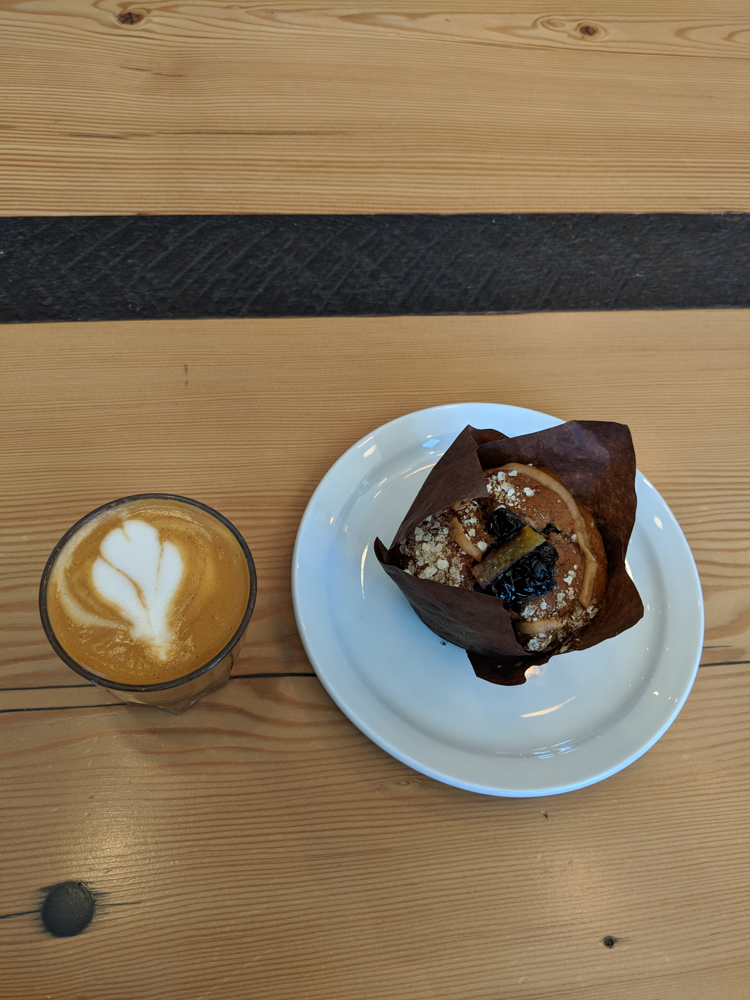
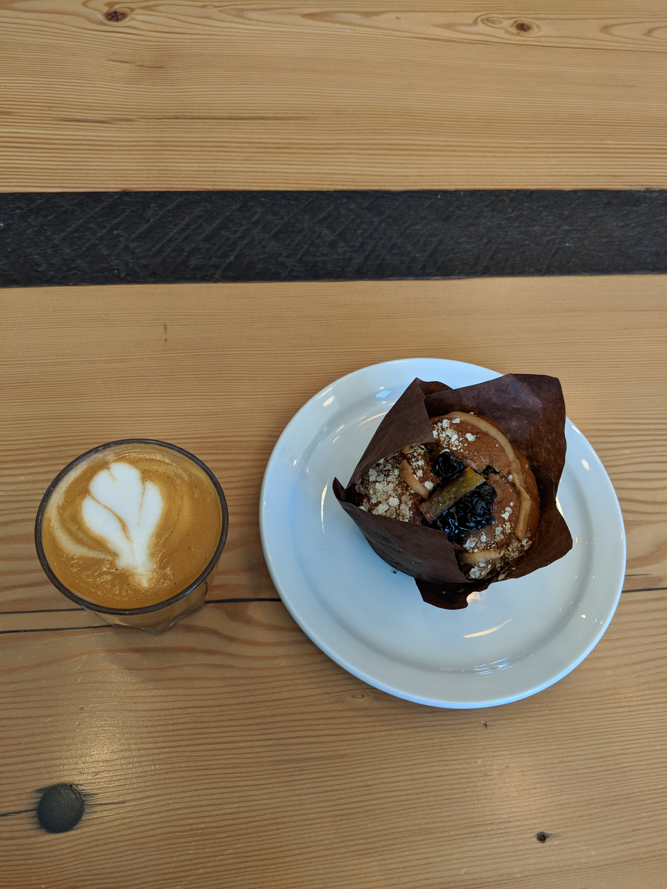
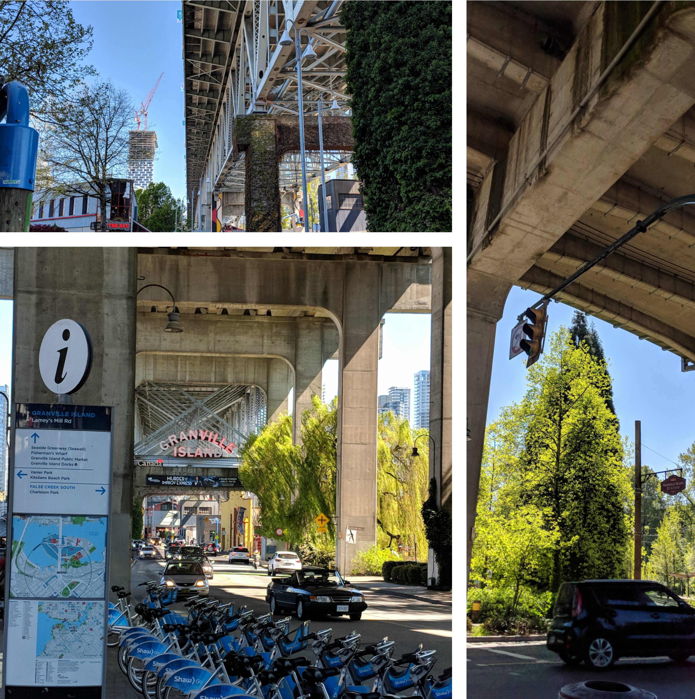
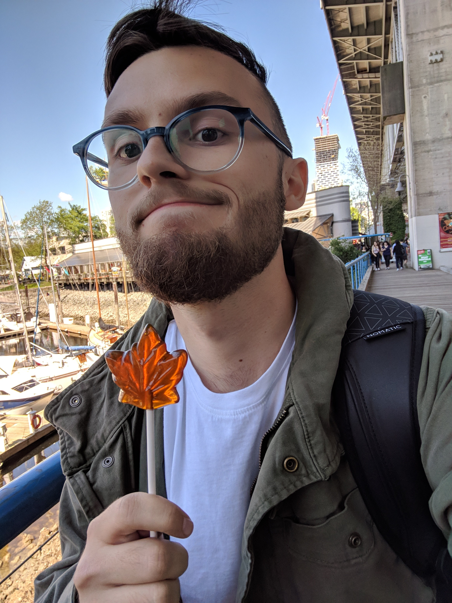
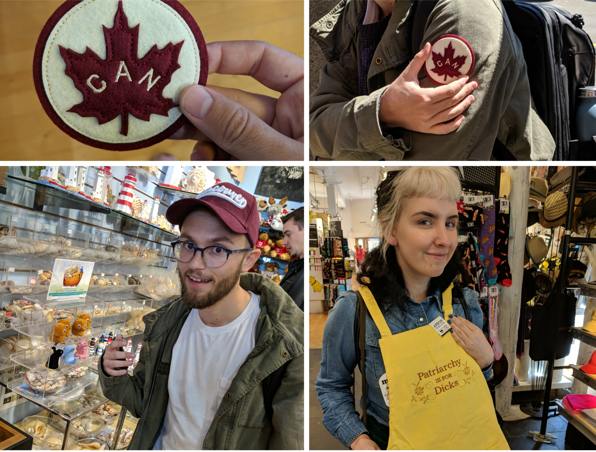
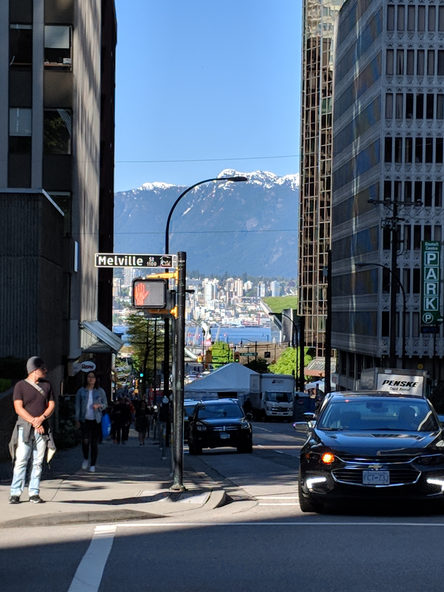
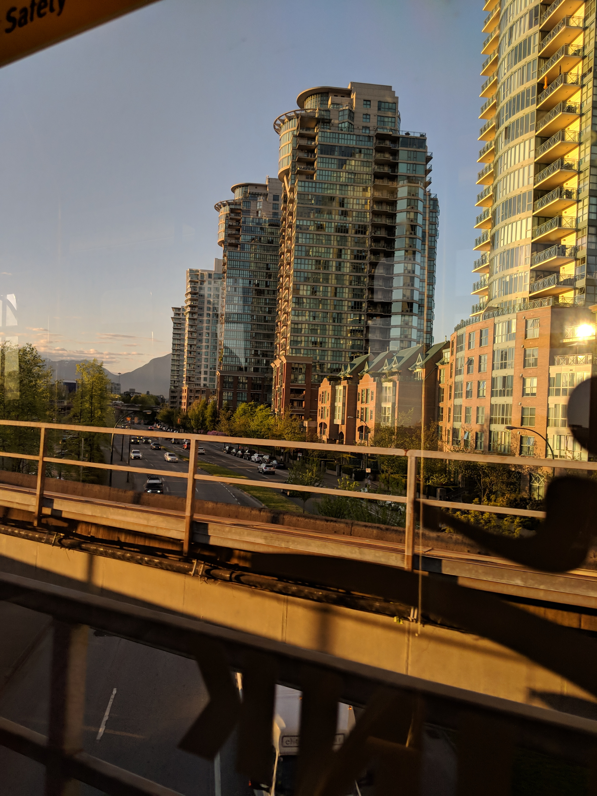
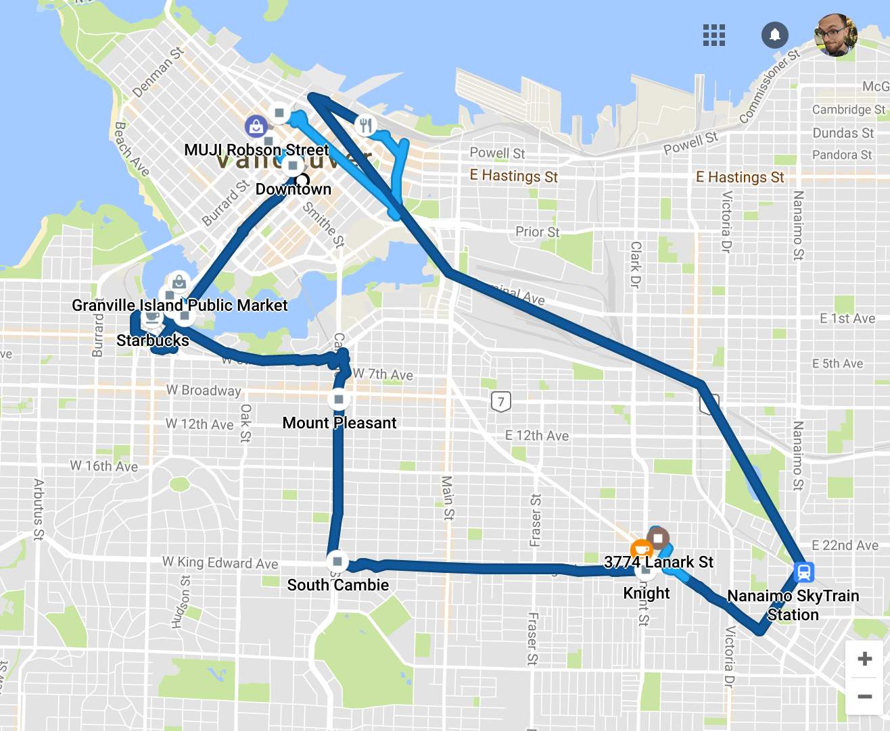
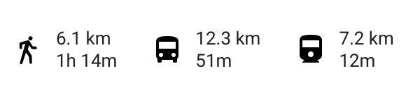

Vancouver, British Columbia: Day 1

The neighborhood was simply beautiful. Every house on the block has a raised garden with their very own compost box. The people here are kind, environmentally conscious, and incredibly helpful. There’s also no shortage of great food, coffee, and art in Vancouver. Speaking of which…
 

Every successful day starts with coffee. ☕
Right across the street from my Airbnb was Vancouver’s third-best coffee shop according to vancouvercoffeesnob.com. If you ask me though, it was easily my number one spot. They even had a Vegan+Gluten Free blueberry chai muffin. 🤤 I downed it before heading to our first stop, recommended by our host, Granville island!



 

Snacks, Sights, & souvenirs
Granville Island was absolutely stunning. It was a beautiful vantage point for the city and a great place to find some souvenirs. For lunch, I had some cauliflower tacos and for dessert, I had a maple syrup stick. There’s a lot to do here, a lot to see here, and a lot to eat here. What a beautiful start to Vancouver! Next up we decided to head downtown for some drinks and adventure before calling it a night.
 


 
Day one of Vancouver was beautiful!
Some friends of mine referred to Portland as the “Brooklyn of the west.” Therefore It’s no surprise that the tourism department here loves to say “Vancouver is Manhattan with mountains.” Goodnight everyone!

